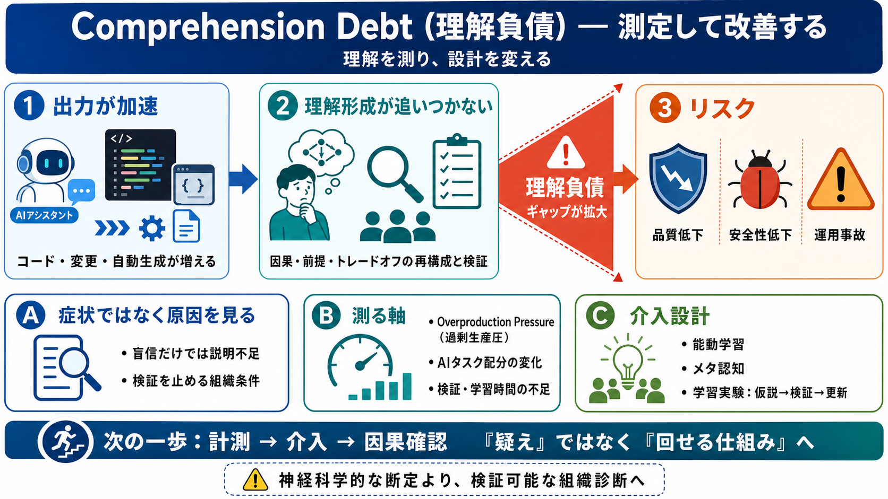

Your Agent Writes Faster Than You Can Read
debt wasn’t “bad code.” The cognitive debt was “I didn’t know the execution plan had changed.” [...] Technical debt has …

debt wasn’t “bad code.” The cognitive debt was “I didn’t know the execution plan had changed.” [...] Technical debt has …
. The concern is for the ones skipping that phase entirely. Stack Overflow's 2025 survey puts AI tool adoption at 85% of…
What changes with AI is cost (dramatically lower), speed (dramatically higher), and interpersonal management overhead (e…
Cognitive debt will grow. AI tools will keep getting better, more convincing, less often wrong, and harder to challenge.…
change it. Where cognitive load is what developers experience in the moment, cognitive debt is a project-level property,…